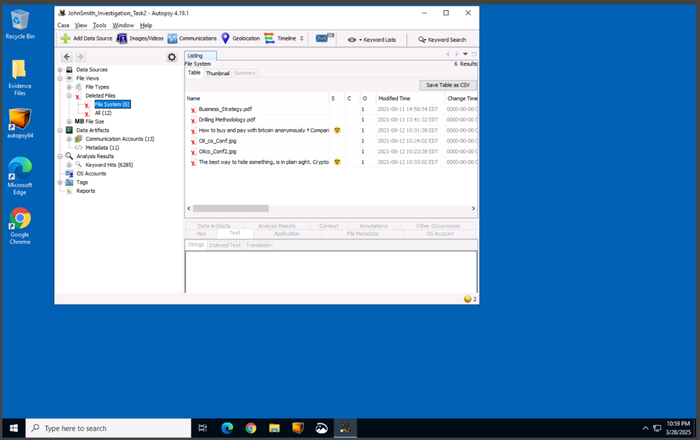
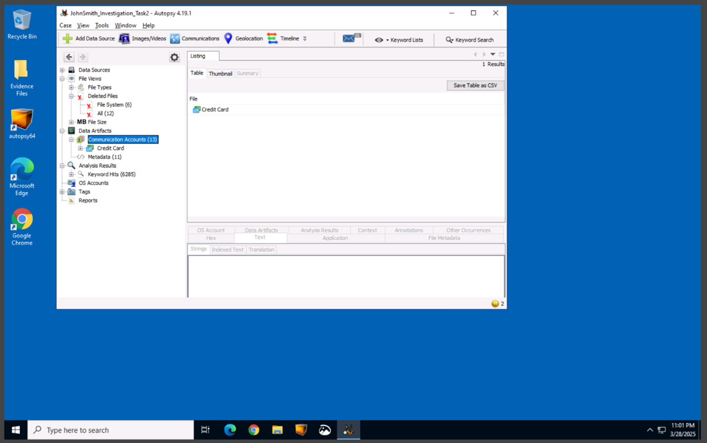
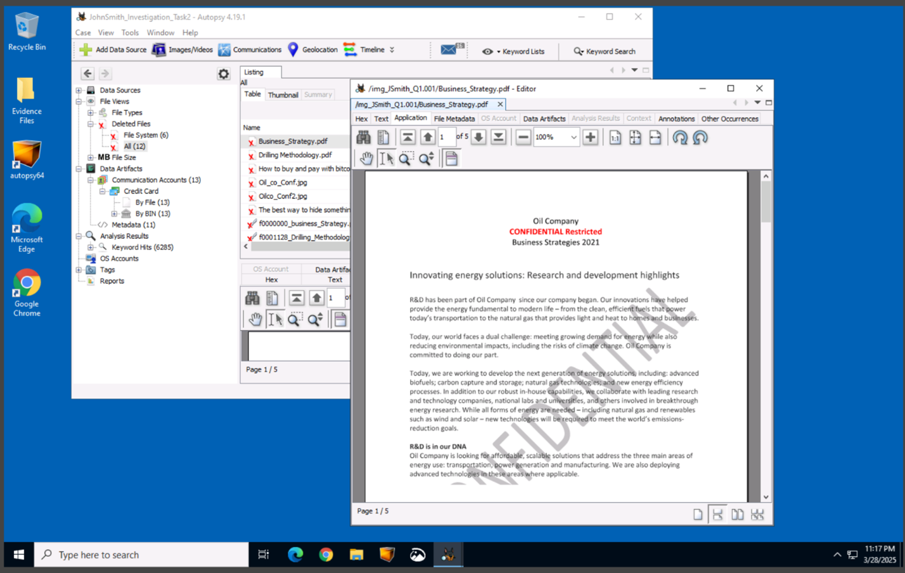
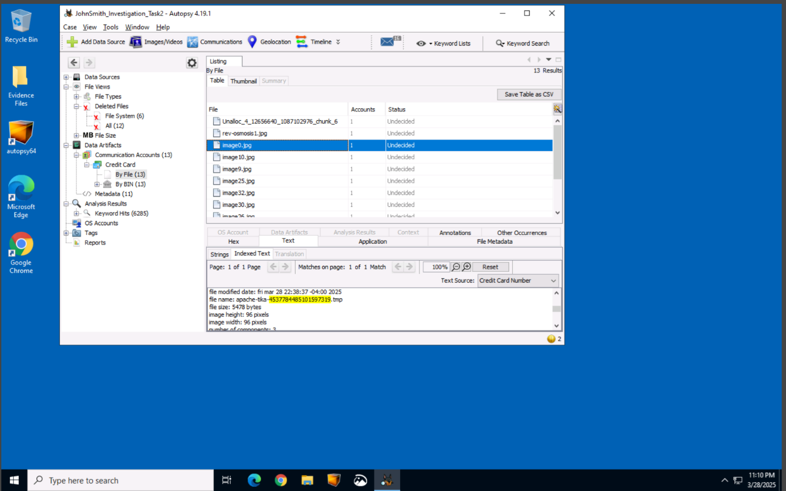

Autopsy Forensics Report
Examiner: Mike Costner
Case Name: JohnSmith_Investigation_Task2
Case ID: BFN2-T2-JS-PolicyViolation
Case Setup
Autopsy was used to open a new case with the evidence image files provided. The data source was added by selecting the Disk Image or VM File option, loading JSmith_Q1.001, and applying keyword search and image carving modules for PDF and JPG files.
Evidence Identification Process
- Deleted Files: Located multiple confidential documents marked as “Confidential Restricted,” including
Business_Strategy.pdfandDrilling Methodology.pdf. - Communication Accounts: Found 13 image-based temp files containing embedded credit card numbers, several matching valid BINs.
- Metadata: Showed files were originally owned by “Mike Morris,” not John Smith — a potential red flag indicating unauthorized access.
- Keyword Hits: Identified 6,000+ unique URLs from
dailyfintech.com, suggesting bulk scraping or automated retrieval of financial content. - File Types: Additional .jpg images were discovered with embedded credit card data — possibly screenshots or photos of sensitive documents.
- Cryptocurrency Files: Found documents like
6 Ways To Make Untraceable Bitcoin Transactions.pdfhinting at an effort to hide financial activity.
Some Key Visual Findings





Conclusion
John Smith’s digital activity reveals deliberate access to confidential company documents, possession of embedded financial data, and files on obfuscating digital transactions. The cumulative evidence strongly supports a violation of company policy and raises concerns of potential data misuse or financial misconduct.